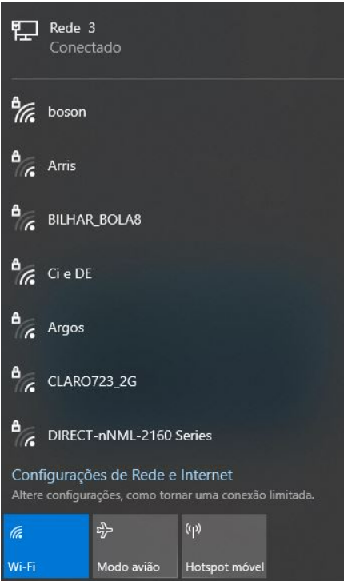
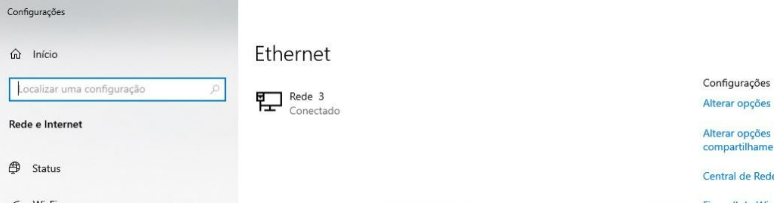
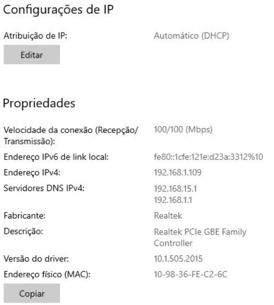
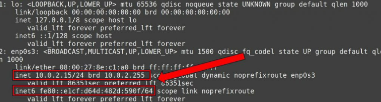
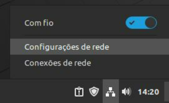
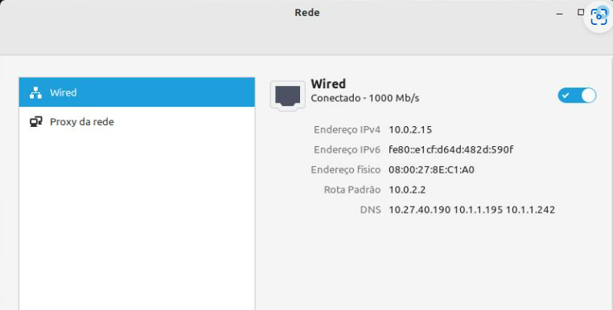

Um Endereço de Protocolo da Internet (Endereço IP), do inglês Internet Protocol address (IP address), é um rótulo numérico atribuído a cada dispositivo (computador, impressora, smartphone etc.) conectado a uma rede de computadores que utiliza o Protocolo de Internet para comunicação. Um endereço IP serve a duas funções principais: identificação de interface de hospedeiro ou de rede e endereçamento de localização.
Uma tarefa bastante comum e importante, realizada com frequência é a consulta aos endereços de rede usados pelos dispositivos – o endereço IP – quer seja para realizar manutenção de redes e conexões com falha quer seja para realizar configurações e inventário de redes, locais ou remotas.
Porém, cada dispositivo pode empregar um sistema operacional distinto, e o modo de realizar a consulto do IP pode variar bastante de um sistema para outro. Por exemplo, um PC desktop convencional pode usar o sistema operacional Windows, ao passo que um servidor por empregar Linux.
Como descobrir o IP em cada um desses sistemas – ou em outros? É disso que se trata esse artigo. Vou mostrar como descobrir o endereço IP em diversos sistemas operacionais diferentes: Linux, Windows,veja os procedimentos necessários a cada um deles.
Para consultar o IP de uma máquina Windows abra o Prompt de Comandos do sistema digitando cmd na caixa de pesquisa e pressionando Enter. No prompt aberto, execute o comando ipconfig:
As linhas “Endereço IPv6 de link local” e “Endereço IPv4” mostram, respectivamente, os endereços IPv6 e IPv4 de suas interfaces de rede (adaptadores Ethernet), incluindo placas de rede sem fio (adaptadores Wi-Fi), se houver alguma na máquina.
Informações adicionais como a máscara de sub-rede e o gateway padrão também são exibidas com esse comando.
No exemplo acima, meu endereço IPv4 é 192.168.1.109, com máscara de sub-rede 255.255.255.0 e gateway padrão (roteador) 192.168.1.1. Também é mostrado o endereço IPv6 atribuído á interface de rede.
Esse mesmo comando também funciona no terminal do Windows PowerShell, exibindo exatamente as mesmas informações.
Em vez de usar comandos do prompt, também podemos verificar os endereços IP no Windows por meio de sua interface gráfica.
Para isso, clique no ícone de rede na barra de notificações:
Será aberto um menu suspenso com as opções de conexão de rede disponíveis, com e sem fio, incluindo as redes às quais a máquina está conectada no momento (no meu caso, “Rede 3 – Conectado”):
Clique na rede cujo endereço IP deseja consultar. Será aberta a janela de Configurações do sistema, exibindo as redes conectadas:
Clique na rede desejada novamente. Na janela seguinte, role a tela até chegar na seção “Propriedades”, onde você encontrará as configurações de rede da interface selecionada, incluindo os endereços IP:
Serão exibidas várias informações no terminal, incluindo os endereços IP da máquina, como mostra a figura a seguir:

No meu exemplo, o endereço IPv4 aparece na linha iniciada por “inet” e o IPv6 na linha “inet6“.
Serão exibidos endereços para cada interface de rede, sendo a interface lo a interface de loopback, e (no meu exemplo) a interface enp0s3 é a placa de rede propriamente dita.
Descobrir o IP de uma máquina no Linux usando a interface gráfica é um procedimento que pode variar de uma distribuição para outra, dependendo de qual interface está sendo utilizada (Gnome, Mate, Xfce, etc.).
No exemplo mostrado nas telas a seguir, uso a distribuição Linux Mint com a interface Cinnamon:
1. No canto inferior esquerdo da tela, clique no ícone de rede e então na opção Configurações de rede:

2. Será aberta a tela de configurações de rede. Na guia Wired são exibidas essas configurações, incluindo os endereços IP utilizados (tanto IPv4 quanto IPv6). O mesmo vale para interfaces de rede sem fio, que aparecerão na guia apropriada:
